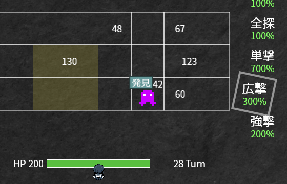
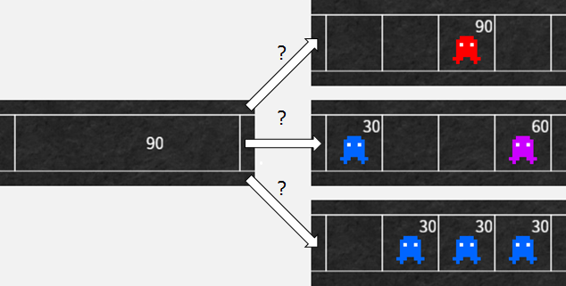

インビジゴースト
見えざる敵の居所を探り、迎え撃て！ PC ブラウザゲームです。
Firefox と Google Chrome で動作確認をしています。 Internet Explorer では効果音がうまく再生されません。
バグの報告・要望
ゴーストは姿が見えない。しかし、ゴーストゴーグルをかければ範囲に潜むゴーストの 霊力の和と霊力の重心 がわかる。ゴーグルと霊撃を駆使し、居所を推測・絞りこみながら撃退せよ！

説明
| ↑ ↓ ← → キー | 移動 |
| Z キー | 決定 / 攻撃 |
| X キー | キャンセル / ターンを進める |
霊力の和と霊力の重心
左画像のように見えるとき、白線で囲まれた横 4 マスに潜むゴーストの居所はわからないが、霊力の和は 90 で、霊力の重心は 90 と表示されている位置にあるということです。
では、実際にゴーストがどこに潜んでいるのかというと、右画像のような 3 通りが考えられます（それら以外の可能性もあります）。

目的
ターンを進めるごとに前進してくるゴーストを倒しながら夜明けを迎えてください。どのゴーストも HP は 2 で、倒せなかったゴーストからは霊力分のダメージをくらいます。あとは色々試してみてください。
ゲーム
下にスクロールするとあります。それではお楽しみください。
更新履歴
- v1.0 2015/06/18
- 公開
謝辞
使わせていただいた素材などです、ありがとうございます。
言語 CoffeeScript
ゲームフレームワーク Phaser
フォント 源の角
効果音 ザ・マッチメイカァズ さま
効果音 TAM Music Factory さま
キャラチップ画像 臼井の会 さま
背景画像 写真AC さま